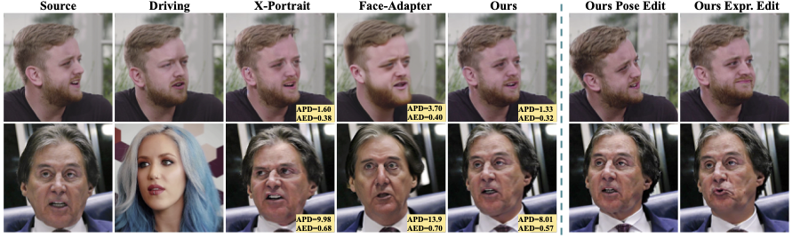
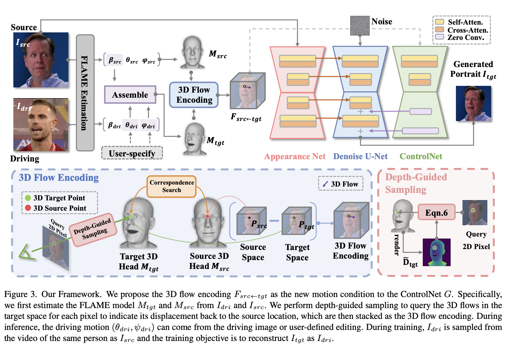
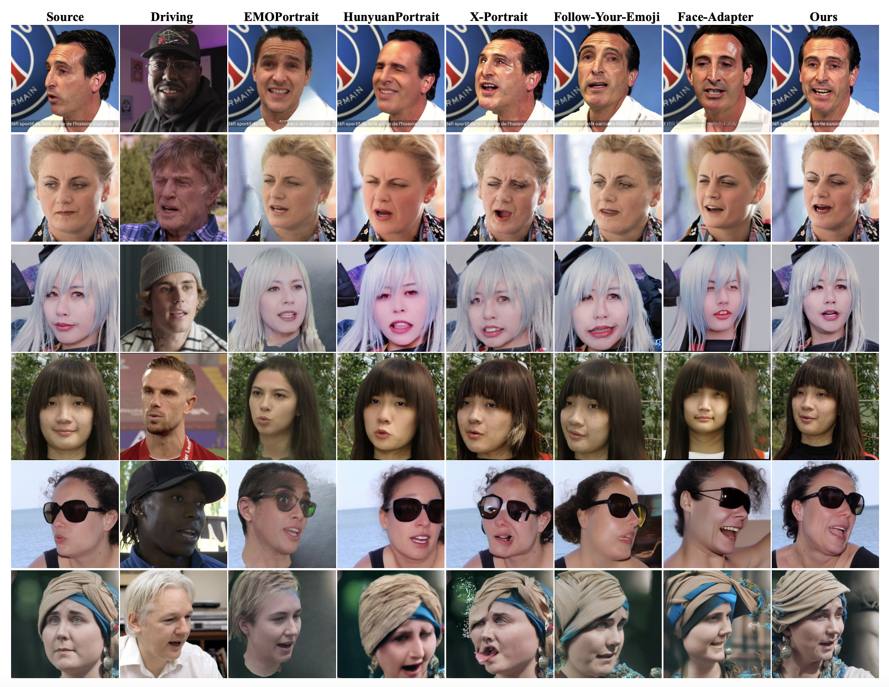
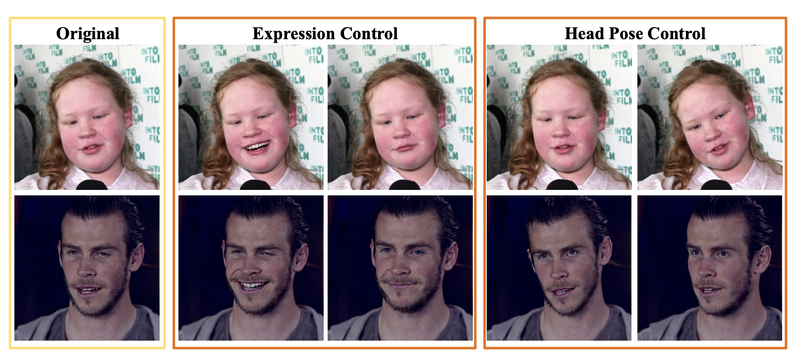

<!DOCTYPE html>
<html lang="en">
<head>
  <meta charset="UTF-8" />
  <meta name="viewport" content="width=device-width, initial-scale=1.0" />
  <title>FG-Portrait: 3D Flow Guided Editable Portrait Animation</title>
  <link rel="preconnect" href="https://fonts.googleapis.com">
  <link rel="preconnect" href="https://fonts.gstatic.com" crossorigin>
  <link href="https://fonts.googleapis.com/css2?family=Inter:wght@400;500;600;700;800&display=swap" rel="stylesheet">
  <link rel="stylesheet" href="style.css" />
</head>
<body>
  <header class="hero">
    <div class="container">
      <h1>FG-Portrait: 3D Flow Guided Editable Portrait Animation</h1>
      <p class="subtitle">CVPR 2026</p>

      <div class="authors">
        <span>Yating Xu<sup>1</sup></span>
        <span>Yunqi Miao<sup>2</sup></span>
        <span>Evangelos Ververas<sup>3</sup></span>
        <span>Jiankang Deng<sup>3</sup></span>
        <span>Jifei Song<sup>4</sup></span>
      </div>

      <p class="affiliations">
        <span><sup>1</sup>National University of Singapore</span>
        <span><sup>2</sup>University of Warwick</span>
        <span><sup>3</sup>Imperial College London</span>
        <span><sup>4</sup>University of Surrey</span>
      </p>

      <div class="button-row">
        <a class="btn primary" href="#abstract">Abstract</a>
        <a class="btn" href="#method">Framework</a>
        <a class="btn" href="#results">Results</a>
        <a class="btn" href="#bibtex">BibTeX</a>
      </div>
    </div>
  </header>

  <main>
    <section class="section teaser">
      <div class="container">
        
        
      </div>
    </section>

    <section id="abstract" class="section">
      <div class="container narrow">
        <h2>Abstract</h2>
        <p>
          Motion transfer from the driving to the source portrait remains a key challenge in the portrait animation. Current diffusion-based approaches condition only on the driving motion, which fails to capture source-to-driving correspondences and consequently yields suboptimal motion transfer. Although flow estimation provides an alternative, predicting dense correspondences from 2D input is ill-posed and often yields inaccurate animation. We address this problem by introducing <strong>3D flows</strong>, a learning-free and geometry-driven motion correspondence directly computed from parametric 3D head models. To integrate this 3D prior into diffusion model, we introduce <strong>3D flow encoding</strong> to query potential
       3D flows for each target pixel to indicate its displacement back to the source location. To obtain 3D flows aligned with 2D motion changes, we further propose <strong>depth-guided sampling</strong> to accurately locate the corresponding 3D points for each pixel. Beyond high-fidelity portrait animation, our model further supports <strong>user-specified editing</strong> of facial expression and head pose. Extensive experiments demonstrat the superiority of our method on consistent driving motion transfer as well as faithful source identity preservation.
        </p>
      </div>
    </section>

    <section id="method" class="section alt">
      <div class="container">
        <h2>Framework</h2>
        
      </div>
    </section>

    <section id="results" class="section">
      <div class="container">
        <h2>Results</h2>
        
        
        

    </section>

    <section class="section alt">
      <div class="container">
        <h2>User-controllable Editing</h2>
        
      </div>
    </section>

   

    <section id="bibtex" class="section alt">
      <div class="container narrow">
        <h2>BibTeX</h2>
<pre><code>@article{xu2025fgportrait,
  title   = {FG-Portrait: 3D Flow Guided Editable Portrait Animation},
  author  = {Xu, Yating and Miao, Yunqi and Ververas, Evangelos and Deng, Jiankang and Song, Jifei},
  journal = {arXiv preprint arXiv:2603.23381},
  year    = {2025}
}</code></pre>
      </div>
    </section>
  </main>

</body>
</html>
